🐉 CLANK! 地下墓穴
Clank! Catacombs · 设计：Paul Dennen · Dire Wolf 出品（官方中文规则书全文转录）
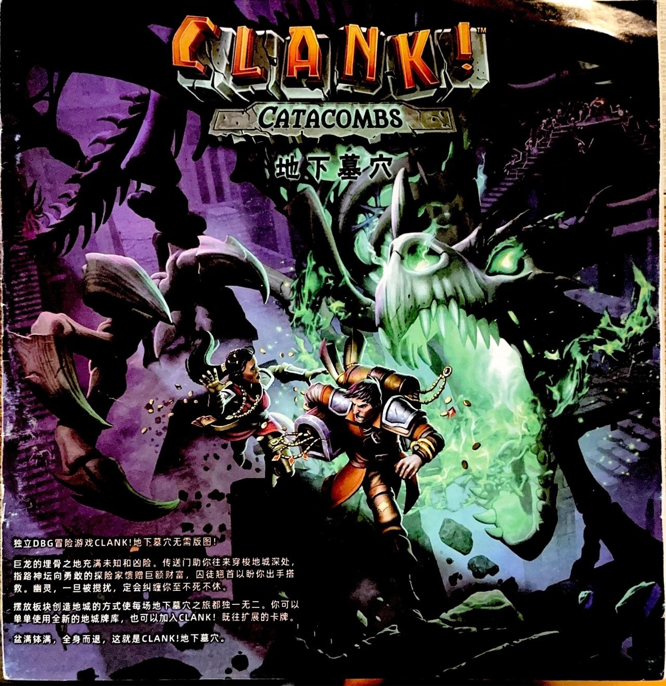
本页整理自微信公众号「无忧桌游」《CLANK 地下墓穴》发布的《Clank! Catacombs》官方中文规则书（全书 17 页扫描含封面），逐页全文转录，原书扫描图随文嵌入——点击任意图片即可放大查看。规则内容归 Dire Wolf、Renegade Game Studios 及版权方所有，转录仅供个人学习查阅。
整理说明：原书官译用语（「打野」「踏进地城」「指路神坛」「圣猴神像」「开锁器」「巨龙盲抽袋」「技巧/剑/靴子」等）照录。原书用词不一处均照录：「囚犯/囚徒」混用（P.4 印「囚徒」、P.8 并见两词），「圣猴神龛（P.4）/圣猴神庙（P.15、P.17）」并存；P.4「将7神器」疑缺量词，P.10「22个深处板块中 的4块」空格，P.13「第2个绿色方块，因此绿色玩家受到1点伤害」句，P.16 打折券括注「（例如暴动，战士，法外狂徒）」，均为原书排印如此。P.16「女巫」「战士」条目各有一处被污迹遮盖（依稀笔画疑为「游戏」「战」，已照实标注）。小节标题与〔图:…〕说明为整理所拟，原书为图版分区排版；扫描集共 17 图（封面＋正文 P.2–15＋两页无页码图鉴）。
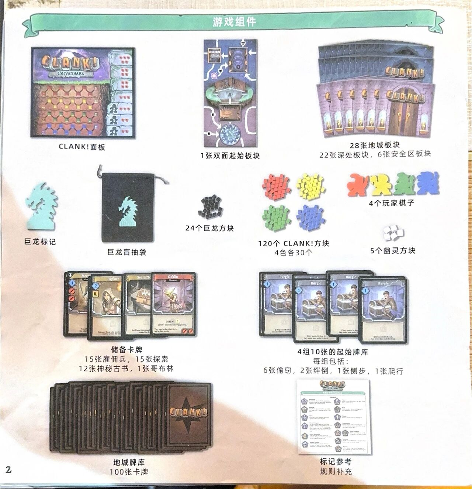
游戏组件
〔图 CLANK!计分面板照片，带血量轨道与棋子格〕
- CLANK!面板
〔图 双面起始板块照片，带传送门、指路神坛与水晶图案〕
- 1张双面起始板块
〔图 一叠地城板块照片〕
- 28张地城板块
- 22张深处板块，6张安全区板块
〔图 青色巨龙标记与印有巨龙图案的黑色抽袋照片〕
- 巨龙标记
- 巨龙盲抽袋
〔图 一小堆黑色小方块照片〕
- 24个巨龙方块
〔图 红、黄、绿、蓝四色小方块照片〕
- 120个 CLANK!方块
- 4色各30个
〔图 红、黄、绿、蓝四个小人形棋子照片〕
- 4个玩家棋子
〔图 一小堆白色半透明方块照片〕
- 5个幽灵方块
〔图 四张储备卡牌照片（雇佣兵、探索、神秘古书、哥布林等）〕
- 储备卡牌
- 15张雇佣兵，15张探索
- 12张神秘古书，1张哥布林
〔图 三张起始牌库卡牌照片（偷窃、绊倒等）〕
- 4组10张的起始牌库
- 每组包括：
- 6张偷窃，2张绊倒，1张侧步，1张爬行
〔图 一叠印有CLANK!星形卡背的卡牌照片〕
- 地城牌库
- 100张卡牌
〔图 标记参考/规则补充单页正反面照片〕
- 标记参考
- 规则补充
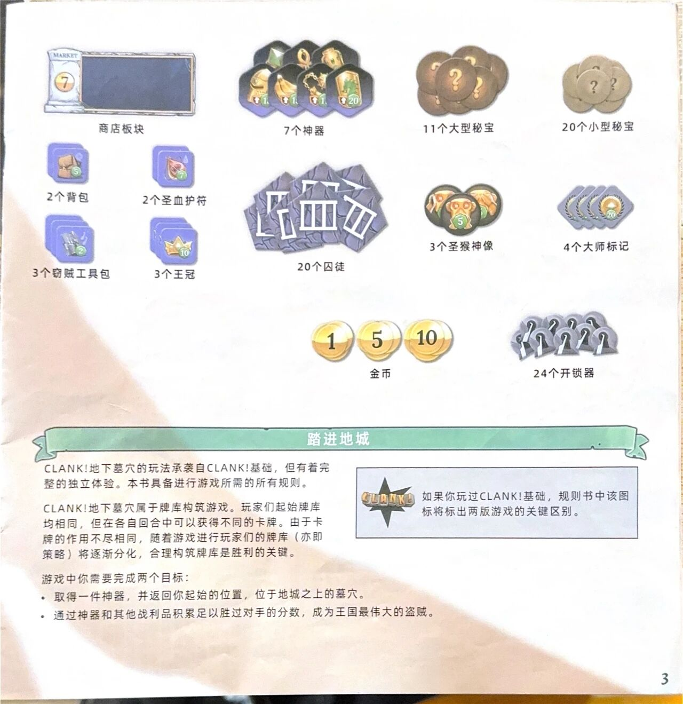
组件图鉴
〔图 印有"MARKET"和数字7的板块图板〕
- 商店板块
〔图 多枚六边形神器卡牌叠放，可见分数标记〕
- 7个神器
〔图 一叠带问号的圆形棕色代板〕
- 11个大型秘宝
〔图 一叠带问号的圆形浅色代板〕
- 20个小型秘宝
〔图 紫色方形卡牌，上有背包图案〕
- 2个背包
〔图 紫色方形卡牌，上有红色护符图案〕
- 2个圣血护符
〔图 紫色方形卡牌，上有工具图案〕
- 3个窃贼工具包
〔图 紫色方形卡牌，上有金色王冠图案〕
- 3个王冠
〔图 灰色方块代板，上有栏杆囚笼图案〕
- 20个囚犯
〔图 三枚圆形代板，上有金色猴子雕像图案，可见分数5〕
- 3个圣猴神像
〔图 四枚菱形灰色标记，上有桂冠环绕宝珠图案，可见分数20〕
- 4个大师标记
〔图 三枚金色硬币代币，分别印有数字1、5、10〕
- 金币
〔图 一叠银色钥匙形代币〕
- 24个开锁器
踏进地城
CLANK!地下墓穴的玩法承袭自CLANK!基础，但有着完整的独立体验。本书具备进行游戏所需的所有规则。
CLANK!地下墓穴属于牌库构筑游戏。玩家们起始牌库均相同，但在各自回合中可以获得不同的卡牌。由于卡牌的作用不尽相同，随着游戏进行玩家们的牌库（亦即策略）将逐渐分化，合理构筑牌库是胜利的关键。
- 游戏中你需要完成两个目标：
- 取得一件神器，并返回你起始的位置，位于地城之上的墓穴。
- 通过神器和其他战利品积累足以胜过对手的分数，成为王国最伟大的盗贼。
〔图 灰色方框提示栏，左侧为爆炸星形中的"CLANK!"标志〕如果你玩过CLANK!基础，规则书中该图标将标出两版游戏的关键区别。
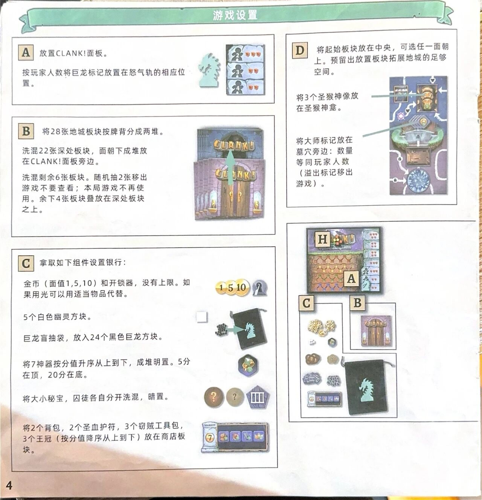
游戏设置
A 放置CLANK!面板。
按玩家人数将巨龙标记放置在怒气轨的相应位置。
〔图 浅绿色巨龙标记与怒气轨局部，轨上印有数字2、3、4及红心图案〕
B 将28张地城板块按牌背分成两堆。
洗混22张深处板块，面朝下成堆放在CLANK!面板旁边。
洗混剩余6张板块。随机抽2张移出游戏不要查看；本局游戏不再使用。余下4张板块叠放在深处板块之上。
〔图 两叠印有"CLANK!"字样和城门图案的地城板块，中间有绿色箭头指示叠放方向〕
C 拿取如下组件设置银行：
金币（面值1,5,10）和开锁器，没有上限。如果用光可以用适当物品代替。
〔图 金币代币1、5、10与开锁器代币〕
5个白色幽灵方块。
〔图 一枚白色方块〕
巨龙盲抽袋，放入24个黑色巨龙方块。
〔图 黑色束口袋（上有青色巨龙图案）与一堆黑色方块，箭头指示放入袋中〕
将7神器按分值升序从上到下，成堆明置。5分在顶，20分在底。〔原文如此："将7神器"疑缺量词〕
〔图 六边形神器卡牌〕
将大小秘宝，囚徒各自分开洗混，暗置。〔整理注：原书此处印"囚徒"，他处多印"囚犯"〕
〔图 大型秘宝、小型秘宝与囚犯代板〕
将2个背包，2个圣血护符，3个窃贼工具包，3个王冠（按分值降序从上到下）放在商店板块。
〔图 印有"MARKET"和数字7的商店板块，其上放置背包、护符、工具包、王冠卡牌〕
D 将起始板块放在中央，可选任一面朝上。预留出放置板块拓展地城的足够空间。
将3个圣猴神像放在圣猴神龛。
将大师标记放在墓穴旁边：数量等同玩家人数（溢出标记移出游戏）。
〔图 起始板块照片，可见圣猴神龛、棋子停靠区、大门与水晶区域，有引线分别指向圣猴神像和大师标记的放置处〕
H（布局总览）
〔图 游戏布置完成后的全景照片，标有字母H（CLANK!面板）、A（怒气轨一侧）、B（地城板块堆）、C（银行区：金币、方块、秘宝、囚犯、商店板块与巨龙盲抽袋）〕
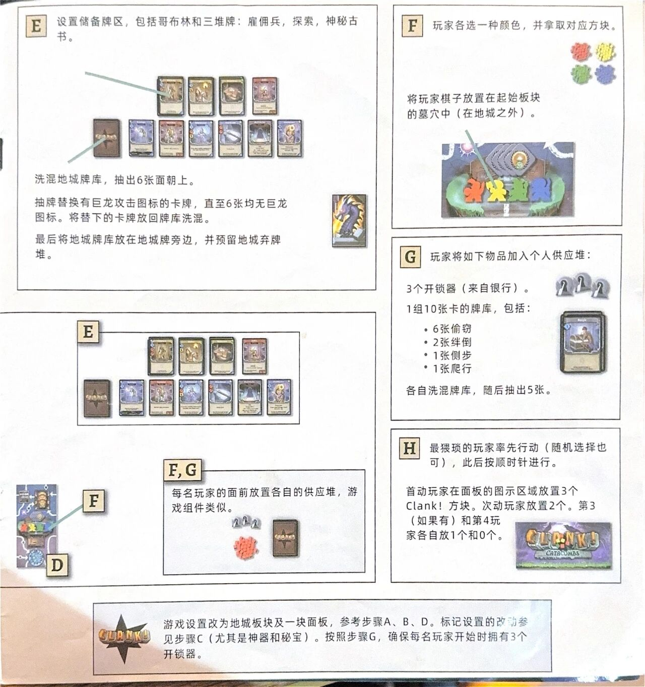
步骤 E：储备牌区
设置储备牌区，包括哥布林和三堆牌：雇佣兵，探索，神秘古书。
〔图 储备牌区布置示意——左为 CLANK! 牌库，右为多堆卡牌（上排4张、下排6张），绿色指示线分别指向牌库与某堆卡牌〕
洗混地城牌库，抽出6张面朝上。
抽牌替换有巨龙攻击图标的卡牌，直至6张均无巨龙图标。将替下的卡牌放回牌库洗混。
最后将地城牌库放在地城牌旁边，并预留地城弃牌堆。
〔图 一张紫色巨龙卡牌（巨龙攻击图标示例）〕
步骤 F：选色与棋子
玩家各选一种颜色，并拿取对应方块。
〔图 红、黄、绿、蓝四色方块（猴子形棋子）〕
将玩家棋子放置在起始板块的墓穴中（在地城之外）。
〔图 叠放的起始板块上立着四个彩色玩家棋子，板块旁有分数标记"20"〕
步骤 G：个人供应堆
玩家将如下物品加入个人供应堆：
3个开锁器（来自银行）。
〔图 3个开锁器代件（钥匙孔形）〕
1组10张卡的牌库，包括：
- 6张偷窃
- 2张绊倒
- 1张侧步
- 1张爬行
各自洗混牌库，随后抽出5张。
〔图 叠放的个人牌库，最上方为一张牌〕
步骤 H：首动玩家与初始 Clank!
最猥琐的玩家率先行动（随机选择也可），此后按顺时针进行。
首动玩家在面板的图示区域放置3个Clank! 方块。次动玩家放置2个。第3（如果有）和第4玩家各自放1个和0个。
〔图 CLANK! CATACOMBS 游戏标志图〕
布局图示
〔图 框内为储备牌区完整布置示意，左上角标 E——CLANK! 牌库与多堆卡牌〕
〔图 面板（计分板）局部，标注 F 指向面板上的玩家棋子，标注 D 指向面板下方的圆形图案〕
供应堆摆放
每名玩家的面前放置各自的供应堆，游戏组件类似。
〔图 3个开锁器代件、一小堆红色方块和 CLANK! 牌库〕
变体设置说明框
游戏设置改为地城板块及一块面板，参考步骤A、B、D。标记设置的改动参见步骤C（尤其是神器和秘宝）。按照步骤G，确保每名玩家开始时拥有3个开锁器。
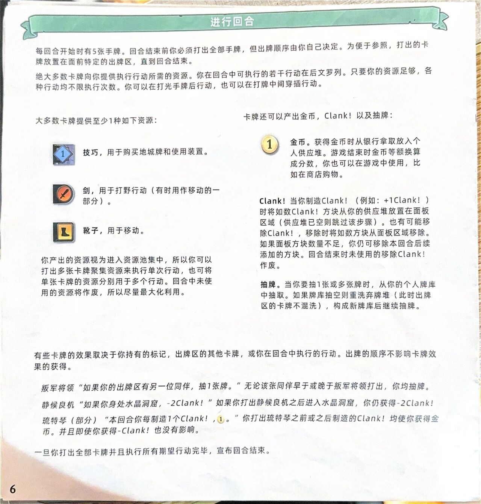
进行回合
每回合开始时有5张手牌。回合结束前你必须打出全部手牌，但出牌顺序由你自己决定。为便于参照，打出的卡牌放置在面前特定的出牌区，直到回合结束。
绝大多数卡牌向你提供执行行动所需的资源。你在回合中可执行的若干行动在后文罗列。只要你的资源足够，各种行动均不限执行次数。你可以在打光手牌后行动，也可以在打牌中间穿插行动。
大多数卡牌提供至少1种如下资源：
〔图 "1"技巧图标〕技巧，用于购买地城牌和使用装置。
〔图 剑图标〕剑，用于打野行动（有时用作移动的一部分）。
〔图 靴子图标〕靴子，用于移动。
你产出的资源视为进入资源池集中，所以你可以打出多张卡牌聚集资源来执行单次行动，也可将单张卡牌的资源分别用于多个行动。回合中未使用的资源将作废，所以尽量最大化利用。
卡牌还可以产出金币，Clank! 以及抽牌：
〔图 金币图标"1"〕金币。获得金币时从银行拿取放入个人供应堆。游戏结束时金币等额换算成分数，你也可以在游戏中使用，比如在商店购物。
Clank! 当你制造Clank! （例如：+1Clank! ）时将如数Clank! 方块从你的供应堆放置在面板区域（供应堆已空则跳过该步骤）。也有可能移除Clank! ，移除时将如数方块从面板区域移除。如果面板方块数量不足，你仍可移除本回合后续添加的方块。回合结束时未使用的移除Clank! 作废。
抽牌。当你要抽1张或多张牌时，从你的个人牌库中抽取。如果牌库抽空则重洗弃牌堆（此时出牌区的卡牌不混洗），构成新牌库后继续抽牌。
卡牌效果与出牌顺序示例
有些卡牌的效果取决于你持有的标记，出牌区的其他卡牌，或你在回合中执行的行动。出牌的顺序不影响卡牌效果的获得。
叛军将领"如果你的出牌区有另一位同伴，抽1张牌。"无论该张同伴早于或晚于叛军将领打出，你均抽牌。
静候良机"如果你身处水晶洞窟，-2Clank!"如果你打出静候良机之后进入水晶洞窟，你仍获得-2Clank!
琉特琴（部分）"本回合你每制造1个Clank! ，〔金币图标：1〕。"你打出琉特琴之前或之后制造的Clank! 均使你获得金币。并且即使你获得-Clank! 也没有影响。
一旦你打出全部卡牌并且执行所有期望行动完毕，宣布回合结束。
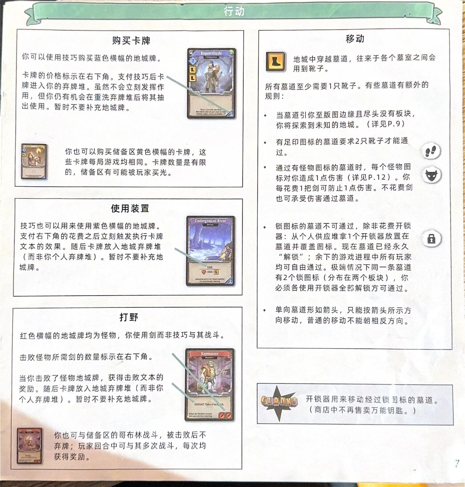
购买卡牌
你可以使用技巧购买蓝色横幅的地城牌。
卡牌的价格标示在右下角。支付技巧后卡牌进入你的弃牌堆。虽然不会立刻发挥作用，但你仍有机会在重洗弃牌堆后将其抽出使用。暂时不要补充地城牌。
〔图 一张蓝色横幅地城牌，牌名英文"Expert Guide"，左上蓝色价签2，牌面左侧上下两枚靴子图标，右下角价格5，牌面下方有英文 flavor 小字；一道浅青色斜线划过卡牌指向正文〕
〔图 一张小型黄色横幅储备区卡牌（持火把的人物插图），右下角有小字与数字〕
你也可以购买储备区黄色横幅的卡牌，这些卡牌每局游戏均相同。卡牌数量是有限的，储备区有可能被玩家买光。
使用装置
技巧也可以用来使用紫色横幅的地城牌。支付右下角的花费之后立刻触发执行卡牌文本的效果。随后卡牌放入地城弃牌堆（而非你个人弃牌堆）。暂时不要补充地城牌。
〔图 一张紫色横幅地城牌，牌名英文"Underground River"，牌面为地下河流插图，卡牌下部有英文"USE:"，其下为红心图标 "-OR-" 字母"L"方块图标，右下角数字2；一道浅青色斜线划过卡牌〕
打野
红色横幅的地城牌均为怪物，你使用剑而非技巧与其战斗。
击败怪物所需剑的数量标示在右下角。
当你击败了怪物地城牌，获得击败文本的奖励。随后卡牌放入地城弃牌堆（而非你个人弃牌堆）。暂时不要补充地城牌。
〔图 一张红色横幅怪物牌，牌名英文"Keymaster"，牌面为哥布林守卫插图，卡面英文小字"DEFEAT: Take a lockpick."及更下一行英文小字，右下角两枚红色剑形标记〕
〔图 一张小型红色横幅储备区怪物卡（哥布林插图），右下角有数字〕
你也可与储备区的哥布林战斗，被击败后不弃牌；玩家回合中可与其多次战斗，每次均获得奖励。
移动
〔图 黄色方形底、黑色靴子的图标〕
地城中穿越墓道，往来于各个墓室之间会用到靴子。
所有墓道至少需要1只靴子。有些墓道有额外的规则：
- 当墓道引你至版图边缘且尽头没有板块，你将探索到未知的地城。（详见P.9）
- 有足印图标的墓道要求2只靴子才能通过。〔图 白色石片上的黑色足印图标〕
- 通过有怪物图标的墓道时，每个怪物图标对你造成1点伤害（详见P.12）。你每花费1把剑可防止1点伤害。不花费剑也可承受伤害通过墓道。〔图 白色石片上的黑色怪物（有角恶魔头）图标〕
- 锁图标的墓道不可通过，除非花费开锁器：从个人供应堆拿1个开锁器放置在墓道并覆盖图标。现在墓道已经永久"解锁"；余下的游戏进程中所有玩家均可自由通过。极端情况下同一条墓道有2个锁图标（分布在两个板块），你必须各使用开锁器全部解锁方可通过。〔图 白色石片上的黑色挂锁图标〕
- 单向墓道形如箭头，只能按箭头所示方向移动，普通的移动不能朝相反方向。
Clank! 提示
〔图 CLANK! 星形标志〕
开锁器用来移动经过锁 图标〔"锁"与"图标"之间印有一处已模糊的行内小图标痕迹，无法辨认具体图形〕的墓道。（商店中不再售卖万能钥匙。）
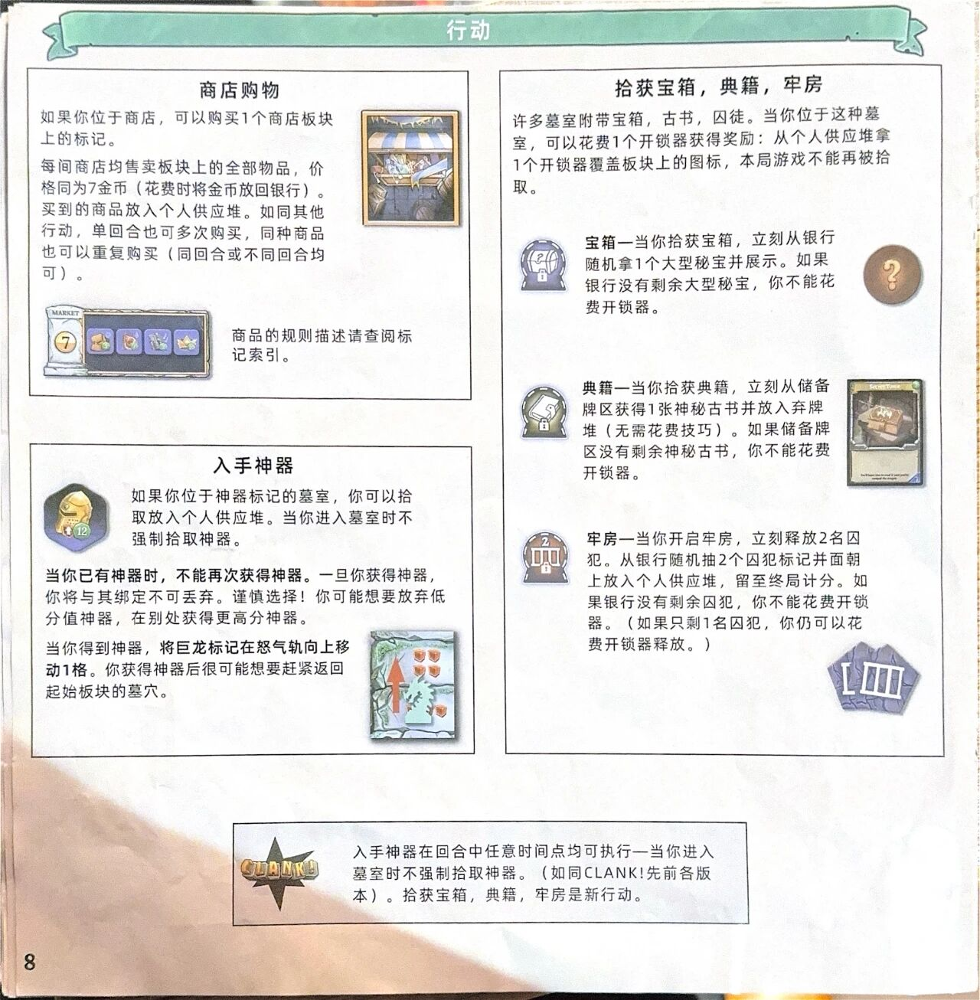
商店购物
如果你位于商店，可以购买1个商店板块上的标记。
每间商店均售卖板块上的全部物品，价格同为7金币（花费时将金币放回银行）。买到的商品放入个人供应堆。如同其他行动，单回合也可多次购买，同种商品也可以重复购买（同回合或不同回合均可）。
〔图 商店（条纹遮阳篷摊位）插图〕
〔图 市场板块示意图，左侧石柱标"MARKET"及圆形示值7，右侧横排4个紫色方形商品标记（背包、肉、剑等图案）〕
商品的规则描述请查阅标记索引。
入手神器
〔图 六边形神器标记，金色头盔图案，带圆形示值12〕
如果你位于神器标记的墓室，你可以拾取放入个人供应堆。当你进入墓室时不强制拾取神器。
当你已有神器时，不能再次获得神器。一旦你获得神器，你将与其绑定不可丢弃。谨慎选择！你可能想要放弃低分值神器，在别处获得更高分神器。
当你得到神器，将巨龙标记在怒气轨向上移动1格。你获得神器后很可能想要赶紧返回起始板块的墓穴。
〔图 怒气轨局部插图，绿色龙形标记旁一支红色粗箭头指向上方，四周散布数个橙色龙首标记〕
拾获宝箱，典籍，牢房
许多墓室附带宝箱，古书，囚徒。当你位于这种墓室，可以花费1个开锁器获得奖励：从个人供应堆拿1个开锁器覆盖板块上的图标，本局游戏不能再被拾取。
〔图 宝箱轮廓图标（上标2、带挂锁）〕
宝箱—当你拾获宝箱，立刻从银行随机拿1个大型秘宝并展示。如果银行没有剩余大型秘宝，你不能花费开锁器。〔图 棕色圆形标记，上为一个问号〕
〔图 典籍轮廓图标（翻开的书本，上标2、带挂锁）〕
典籍—当你拾获典籍，立刻从储备牌区获得1张神秘古书并放入弃牌堆（无需花费技巧）。如果储备牌区没有剩余神秘古书，你不能花费开锁器。〔图 一张黄色横幅卡牌，牌名英文小字，牌面为石台上摊开的书本插图，右下角数字1〕
〔图 牢房轮廓图标（栅栏囚室，上标2、带挂锁）〕
牢房—当你开启牢房，立刻释放2名囚犯。从银行随机抽2个囚犯标记并面朝上放入个人供应堆，留至终局计分。如果银行没有剩余囚犯，你不能花费开锁器。（如果只剩1名囚犯，你仍可以花费开锁器释放。）
〔图 五边形囚犯标记，紫色石板，上刻囚室栅栏图案〕
Clank! 提示
〔图 CLANK! 星形标志〕
入手神器在回合中任意时间点均可执行—当你进入墓室时不强制拾取神器。（如同CLANK!先前各版本）。拾获宝箱，典籍，牢房是新行动。
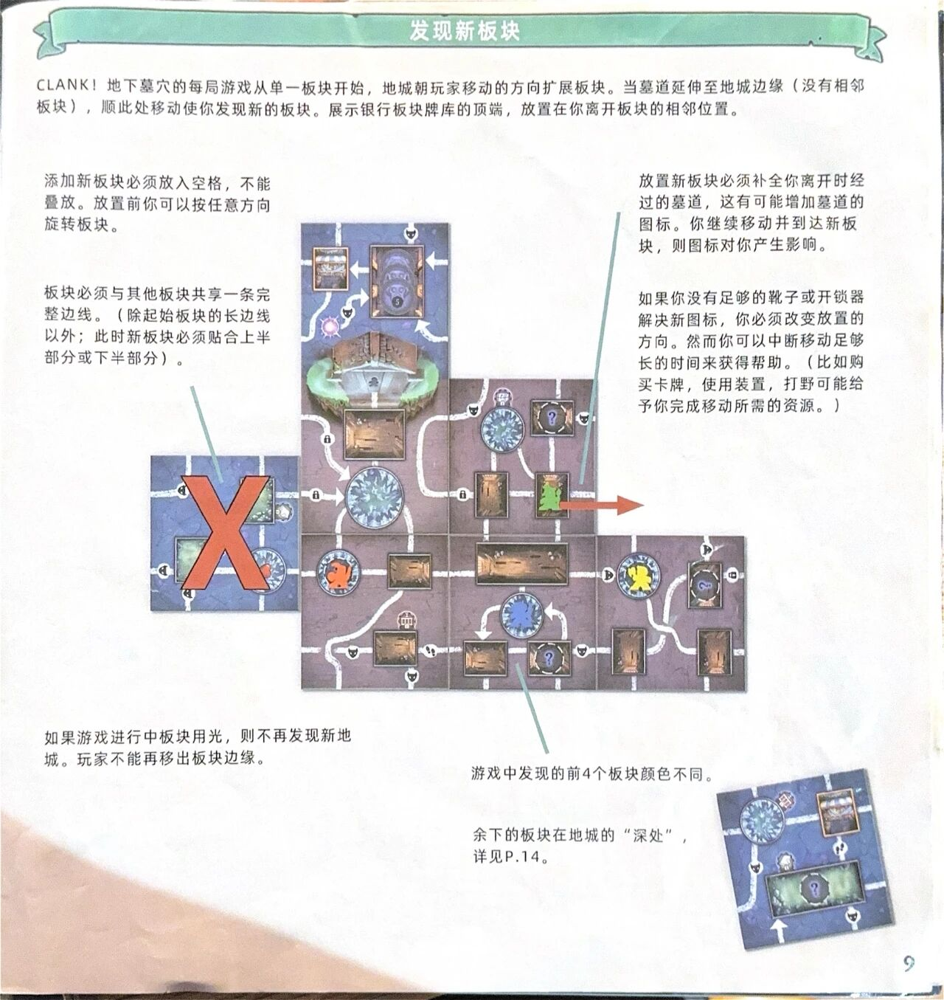
发现新板块
CLANK！地下墓穴的每局游戏从单一板块开始，地城朝玩家移动的方向扩展板块。当墓道延伸至地城边缘（没有相邻板块），顺此处移动使你发现新的板块。展示银行板块牌库的顶端，放置在你离开板块的相邻位置。
〔图 地城布局示意，多个板块拼成地图；左侧一块板块上印有大红"X"表示错误放法；右侧红色箭头指向新板块位置〕
添加新板块必须放入空格，不能叠放。放置前你可以按任意方向旋转板块。
板块必须与其他板块共享一条完整边线。（除起始板块的长边线以外；此时新板块必须贴合上半部分或下半部分）。
放置新板块必须补全你离开时经过的墓道，这有可能增加墓道的图标。你继续移动并到达新板块，则图标对你产生影响。
如果你没有足够的靴子或开锁器解决新图标，你必须改变放置的方向。然而你可以中断移动足够长的时间来获得帮助。（比如购买卡牌，使用装置，打野可能给予你完成移动所需的资源。）
如果游戏进行中板块用光，则不再发现新地城。玩家不能再移出板块边缘。
游戏中发现的前4个板块颜色不同。
余下的板块在地城的"深处"，详见P.14。
〔图 右下角单独一块蓝色板块示意，上有墓道、问号房间与上锁图标〕
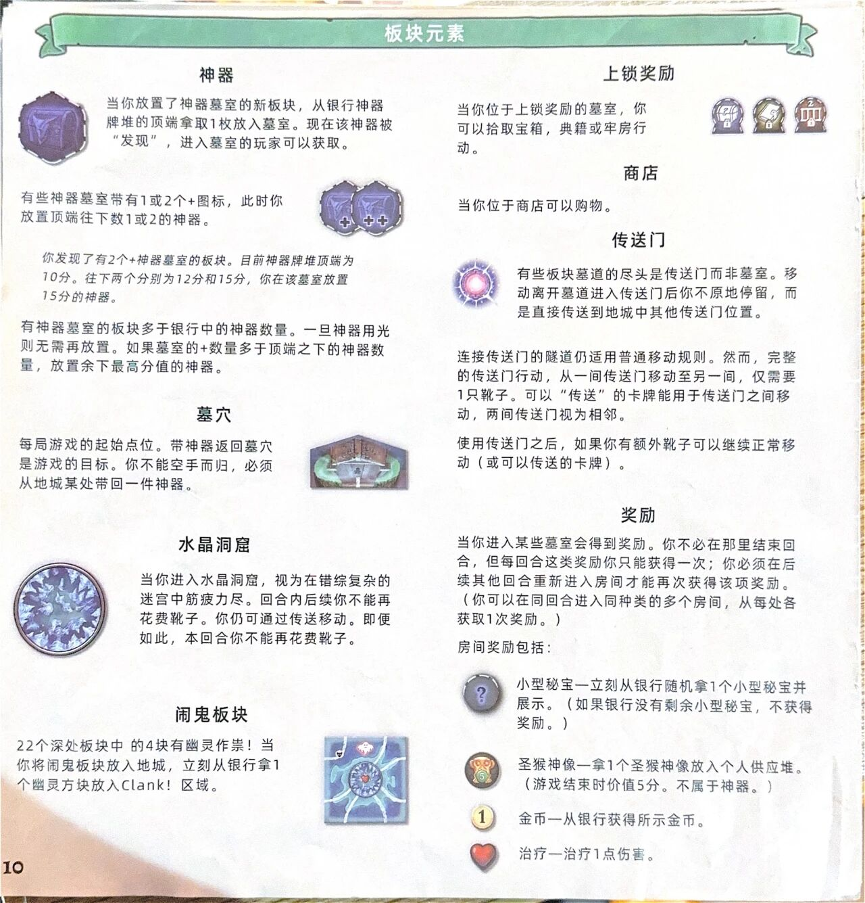
板块元素
神器
〔图 一枚紫色六边形神器代币〕
当你放置了神器墓室的新板块，从银行神器牌堆的顶端拿取1枚放入墓室。现在该神器被"发现"，进入墓室的玩家可以获取。
〔图 两枚带加号图标的紫色神器代币（一枚1个+，一枚2个+）〕
有些神器墓室带有1或2个+图标，此时你放置顶端往下数1或2的神器。
（斜体示例）你发现了有2个+神器墓室的板块。目前神器牌堆顶端为10分。往下两个分别为12分和15分，你在该墓室放置15分的神器。
有神器墓室的板块多于银行中的神器数量。一旦神器用光则无需再放置。如果墓室的+数量多于顶端之下的神器数量，放置余下最高分值的神器。
墓穴
每局游戏的起始点位。带神器返回墓穴是游戏的目标。你不能空手而归，必须从地城某处带回一件神器。
〔图 墓穴（起始板块）图示，半圆形入口、绿色双门〕
水晶洞窟
〔图 圆形水晶洞窟板块图示〕
当你进入水晶洞窟，视为在错综复杂的迷宫中筋疲力尽。回合内后续你不能再花费靴子。你仍可通过传送移动。即便如此，本回合你不能再花费靴子。
闹鬼板块
22个深处板块中 的4块有幽灵作祟！当你将闹鬼板块放入地城，立刻从银行拿1个幽灵方块放入Clank！区域。
〔图 闹鬼板块图示，中央水晶与红心，上方有幽灵图标〕
上锁奖励
当你位于上锁奖励的墓室，你可以拾取宝箱，典籍或牢房行动。
〔图 三个上锁奖励图标：宝箱（1）、典籍、牢房（2），均带锁形标记〕
商店
当你位于商店可以购物。
传送门
〔图 紫色发光传送门图标〕
有些板块墓道的尽头是传送门而非墓室。移动离开墓道进入传送门后你不原地停留，而是直接传送到地城中其他传送门位置。
连接传送门的隧道仍适用普通移动规则。然而，完整的传送门行动，从一间传送门移动至另一间，仅需要1只靴子。可以"传送"的卡牌能用于传送门之间移动，两间传送门视为相邻。
使用传送门之后，如果你有额外靴子可以继续正常移动（或可以传送的卡牌）。
奖励
当你进入某些墓室会得到奖励。你不必在那里结束回合，但每回合这类奖励你只能获得一次；你必须在后续其他回合重新进入房间才能再次获得该项奖励。（你可以在同回合进入同种类的多个房间，从每处各获取1次奖励。）
房间奖励包括：
〔图 灰色问号代币〕小型秘宝—立刻从银行随机拿1个小型秘宝并展示。（如果银行没有剩余小型秘宝，不获得奖励。）
〔图 圣猴神像代币，上有数字5〕圣猴神像—拿1个圣猴神像放入个人供应堆。（游戏结束时价值5分。不属于神器。）
〔图 金币代币，示数字1〕金币—从银行获得所示金币。
〔图 红心图标〕治疗—治疗1点伤害。
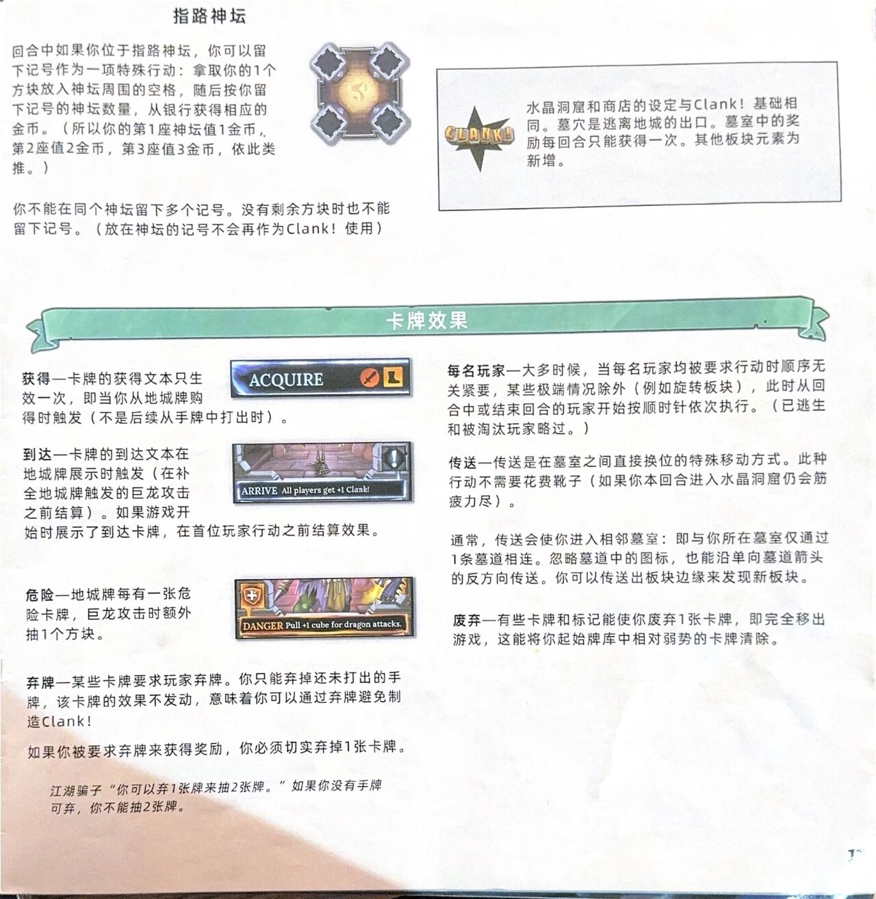
指路神坛
回合中如果你位于指路神坛，你可以留下记号作为一项特殊行动：拿取你的1个方块放入神坛周围的空格，随后按你留下记号的神坛数量，从银行获得相应的金币。（所以你的第1座神坛值1金币，第2座值2金币，第3座值3金币，依此类推。）
你不能在同个神坛留下多个记号。没有剩余方块时也不能留下记号。（放在神坛的记号不会再作为Clank！使用）
〔图 指路神坛板块，中央为金色印记，四角各有一个菱形空格〕
（Clank！标志侧栏框）水晶洞窟和商店的设定与Clank！基础相同。墓穴是逃离地城的出口。墓室中的奖励每回合只能获得一次。其他板块元素为新增。
卡牌效果
获得—卡牌的获得文本只生效一次，即当你从地城牌购得时触发（不是后续从手牌中打出时）。
〔图 卡牌名称栏示例，英文"ACQUIRE"，右侧有剑、靴子图标〕
到达—卡牌的到达文本在地城牌展示时触发（在补全地城牌触发的巨龙攻击之前结算）。如果游戏开始时展示了到达卡牌，在首位玩家行动之前结算效果。
〔图 卡牌名称栏示例，英文"ARRIVE All players get +1 Clank!"〕
危险—地城牌每有一张危险卡牌，巨龙攻击时额外抽1个方块。
〔图 卡牌名称栏示例，英文"DANGER Pull +1 cube for dragon attacks."〕
弃牌—某些卡牌要求玩家弃牌。你只能弃掉还未打出的手牌，该卡牌的效果不发动，意味着你可以通过弃牌避免制造Clank！
如果你被要求弃牌来获得奖励，你必须切实弃掉1张卡牌。
（斜体示例）江湖骗子“你可以弃1张牌来抽2张牌。”如果你没有手牌可弃，你不能抽2张牌。
（右栏）
每名玩家—大多时候，当每名玩家均被要求行动时顺序无关紧要，某些极端情况除外（例如旋转板块），此时从回合中或结束回合的玩家开始按顺时针依次执行。（已逃生和被淘汰玩家略过。）
传送—传送是在墓室之间直接换位的特殊移动方式。此种行动不需要花费靴子（如果你本回合进入水晶洞窟仍会筋疲力尽）。
通常，传送会使你进入相邻墓室：即与你所在墓室仅通过1条墓道相连。忽略墓道中的图标，也能沿单向墓道箭头的反方向传送。你可以传送出板块边缘来发现新板块。
废弃—有些卡牌和标记能使你废弃1张卡牌，即完全移出游戏，这能将你起始牌库中相对弱势的卡牌清除。
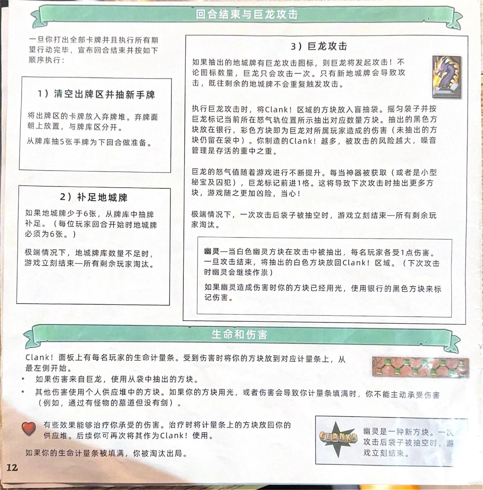
回合结束与巨龙攻击
一旦你打出全部卡牌并且执行所有期望行动完毕，宣布回合结束并按如下顺序执行：
1）清空出牌区并抽新手牌
将出牌区的卡牌放入弃牌堆。弃牌面朝上放置，与牌库区分开。
从牌库抽5张手牌为下回合做准备。
2）补足地城牌
如果地城牌少于6张，从牌库中抽牌补足。（每位玩家回合开始时地城牌必须为6张。）
极端情况下，地城牌库数量不足时，游戏立刻结束—所有剩余玩家淘汰。
3）巨龙攻击
如果抽出的地城牌有巨龙攻击图标，则巨龙将发起攻击！不论图标数量，巨龙只会攻击一次。只有新地城牌会导致攻击，既往剩余的地城牌不会重复触发攻击。
〔图 喷火的紫色巨龙小图〕
执行巨龙攻击时，将Clank！区域的方块放入盲抽袋。摇匀袋子并按巨龙标记当前所在怒气轨位置所示抽出对应数量方块。抽出的黑色方块放在银行，彩色方块即为巨龙对所属玩家造成的伤害（未抽出的方块仍留在袋中）。你制造的Clank！越多，被攻击的风险越大，噪音管理是存活的重中之重。
巨龙的怒气值随着游戏进行不断提升。每当神器被获取（或者是小型秘宝及囚犯），巨龙标记前进1格。这将导致下次攻击时抽出更多方块，游戏随之更加凶险，当心！
极端情况下，一次攻击后袋子被抽空时，游戏立刻结束—所有剩余玩家淘汰。
（框内）幽灵—当白色幽灵方块在攻击中被抽出，每名玩家各受1点伤害。一旦攻击结束，将抽出的白色方块放回Clank！区域。（下次攻击时幽灵会继续作祟）
如果幽灵造成伤害时你的方块已经用光，使用银行的黑色方块来标记伤害。
生命和伤害
Clank！面板上有每名玩家的生命计量条。受到伤害时将你的方块放到对应计量条上，从最左侧开始。
〔图 生命计量条实物照片，绿色方块排于格中，最右端有骷髅标记〕
- 如果伤害来自巨龙，使用从袋中抽出的方块。
- 其他伤害使用个人供应堆中的方块。如果你的方块用光，或者伤害会导致你计量条填满时，你不能主动承受伤害（例如，通过有怪物的墓道但没有剑）。
（红心图标）有些效果能够治疗你承受的伤害。治疗时将计量条上的方块放回你的供应堆。后续你可再次将其作为Clank！使用。
如果你的生命计量条被填满，你被淘汰出局。
（Clank！标志侧栏框）幽灵是一种新方块。一次攻击后袋子被抽空时，游戏立刻结束。
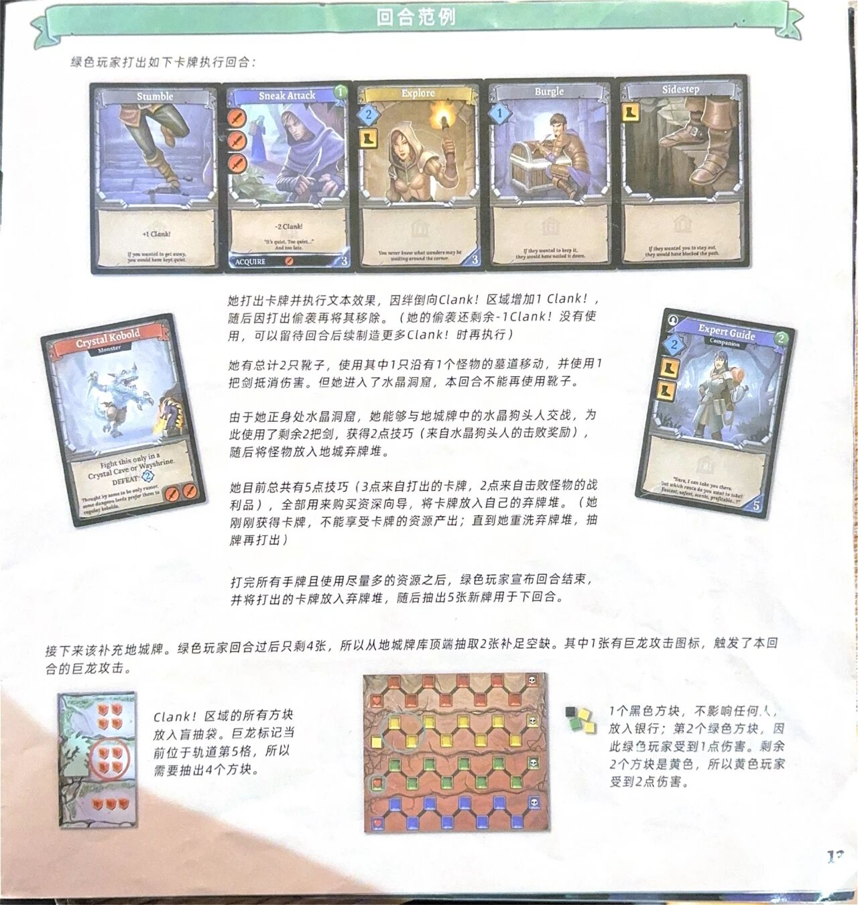
回合范例
绿色玩家打出如下卡牌执行回合：
〔图 五张依次打出的起始卡牌，名称为 Stumble、Sneak Attack、Explore、Burgle、Sidestep〕
她打出卡牌并执行文本效果，因绊倒向Clank！区域增加1 Clank！，随后因打出偷袭再将其移除。（她的偷袭还剩余-1Clank！没有使用，可以留待回合后续制造更多Clank！时再执行）
〔图 左侧卡牌 Crystal Kobold（怪物），文字要点为只能在水晶洞窟或Wyyrstone中与其交战，击败（DEFEAT）2+〕
她有总计2只靴子，使用其中1只沿有1个怪物的墓道移动，并使用1把剑抵消伤害。但她进入了水晶洞窟，本回合不能再使用靴子。
由于她正身处水晶洞窟，她能够与地城牌中的水晶狗头人交战，为此使用了剩余2把剑，获得2点技巧（来自水晶狗头人的击败奖励），随后将怪物放入地城弃牌堆。
〔图 右侧卡牌 Expert Guide（伙伴）〕
她目前总共有5点技巧（3点来自打出的卡牌，2点来自击败怪物的战利品），全部用来购买资深向导，将卡牌放入自己的弃牌堆。（她刚刚获得卡牌，不能享受卡牌的资源产出；直到她重洗弃牌堆，抽牌再打出）
打完所有手牌且使用尽量多的资源之后，绿色玩家宣布回合结束，并将打出的卡牌放入弃牌堆，随后抽出5张新牌用于下回合。
接下来该补充地城牌。绿色玩家回合过后只剩4张，所以从地城牌库顶端抽取2张补足空缺。其中1张有巨龙攻击图标，触发了本回合的巨龙攻击。
〔图 左下为带红心与轨道的卡牌图示〕Clank！区域的所有方块放入盲抽袋。巨龙标记当前位于轨道第5格，所以需要抽出4个方块。
〔图 中下为巨龙攻击轨道面板，多色方块分布于各行；右下为4个方块（黑、绿、黄、黄）〕1个黑色方块，不影响任何人，放入银行；第2个绿色方块，因此绿色玩家受到1点伤害〔原文如此，疑漏"是"字〕。剩余2个方块是黄色，所以黄色玩家受到2点伤害。
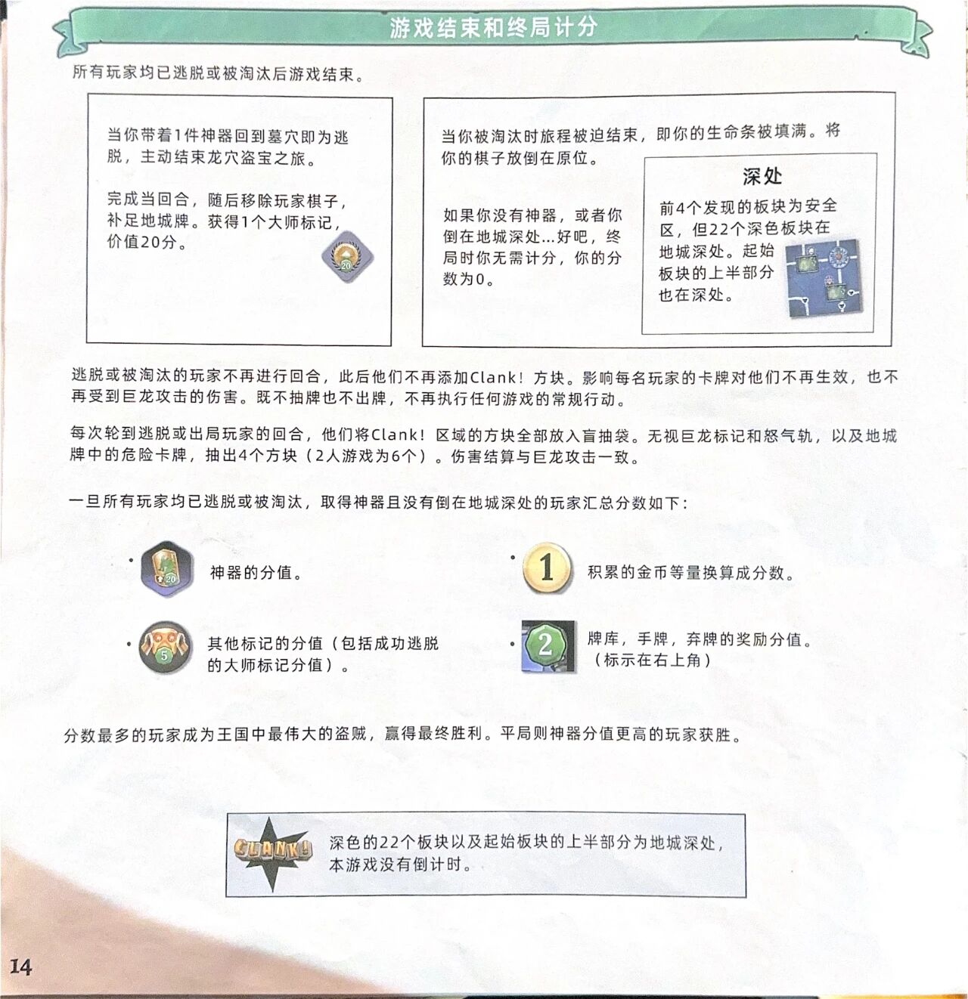
游戏结束和终局计分
所有玩家均已逃脱或被淘汰后游戏结束。
〔方框：逃脱〕当你带着1件神器回到墓穴即为逃脱，主动结束龙穴盗宝之旅。
完成当回合，随后移除玩家棋子，补足地城牌。获得1个大师标记，价值20分。
〔图 大师标记图示，标有20〕
〔方框：被淘汰〕当你被淘汰时旅程被迫结束，即你的生命条被填满。将你的棋子放倒在原位。
如果你没有神器，或者你倒在地城深处...好吧，终局时你无需计分，你的分数为0。
〔方框：深处〕前4个发现的板块为安全区，但22个深色板块在地城深处。起始板块的上半部分也在深处。
〔图 起始板块图示〕
逃脱或被淘汰的玩家不再进行回合，此后他们不再添加Clank！方块。影响每名玩家的卡牌对他们不再生效，也不再受到巨龙攻击的伤害。既不抽牌也不出牌，不再执行任何游戏的常规行动。
每次轮到逃脱或出局玩家的回合，他们将Clank！区域的方块全部放入盲抽袋。无视巨龙标记和怒气轨，以及地城牌中的危险卡牌，抽出4个方块（2人游戏为6个）。伤害结算与巨龙攻击一致。
一旦所有玩家均已逃脱或被淘汰，取得神器且没有倒在地城深处的玩家汇总分数如下：
- 〔图 神器图标，标有20〕神器的分值。
- 〔图 金币图标，标有1〕积累的金币等量换算成分数。
- 〔图 图腾标记图标，标有5〕其他标记的分值（包括成功逃脱的大师标记分值）。
- 〔图 卡牌背面图标，标有2〕牌库，手牌，弃牌的奖励分值。（标示在右上角）
分数最多的玩家成为王国中最伟大的盗贼，赢得最终胜利。平局则神器分值更高的玩家获胜。
〔图 CLANK! 标志〕深色的22个板块以及起始板块的上半部分为地城深处，本游戏没有倒计时。
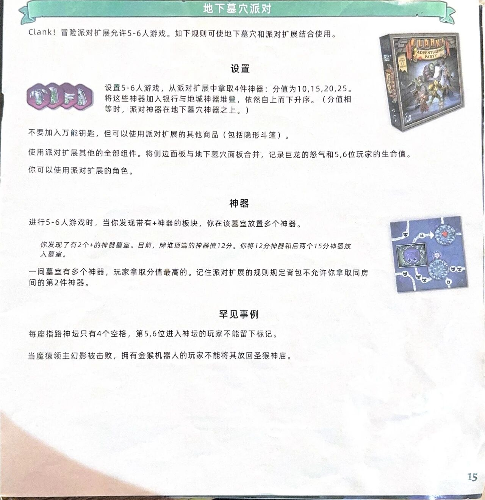
地下墓穴派对（5–6 人扩展）
Clank! 冒险派对扩展允许5-6人游戏。如下规则可使地下墓穴和派对扩展结合使用。
〔图 页面右上角为《Clank! Adventuring Party》派对扩展包装盒照片〕
设置
〔图 左侧为4枚紫色五边形神器指示物图案〕
设置5-6人游戏，从派对扩展中拿取4件神器：分值为10,15,20,25。将这些神器加入银行与地城神器堆叠，依然自上而下升序。（分值相等时，派对神器在地下墓穴神器之上。）
不要加入万能钥匙，但可以使用派对扩展的其他商品（包括隐形斗篷）。
使用派对扩展其他的全部组件。将侧边面板与地下墓穴面板合并，记录巨龙的怒气和5,6位玩家的生命值。你可以使用派对扩展的角色。
神器
进行5-6人游戏时，当你发现带有+神器的板块，你在该墓室放置多个神器。
你发现了有2个+的神器墓室。目前，牌堆顶端的神器值12分。你将12分神器和后两个15分神器放入墓室。（斜体示例文字）
一间墓室有多个神器，玩家拿取分值最高的。记住派对扩展的规则规定背包不允许你拿取同房间的第2件神器。
〔图 右侧为一块地下墓穴板块示意图，含+神器墓室、神器堆叠图标、锁形与靴子等图标及路径〕
罕见事例
每座指路神坛只有4个空格，第5,6位进入神坛的玩家不能留下标记。
当魔猿领主幻影被击败，拥有金猴机器人的玩家不能将其放回圣猴神庙。
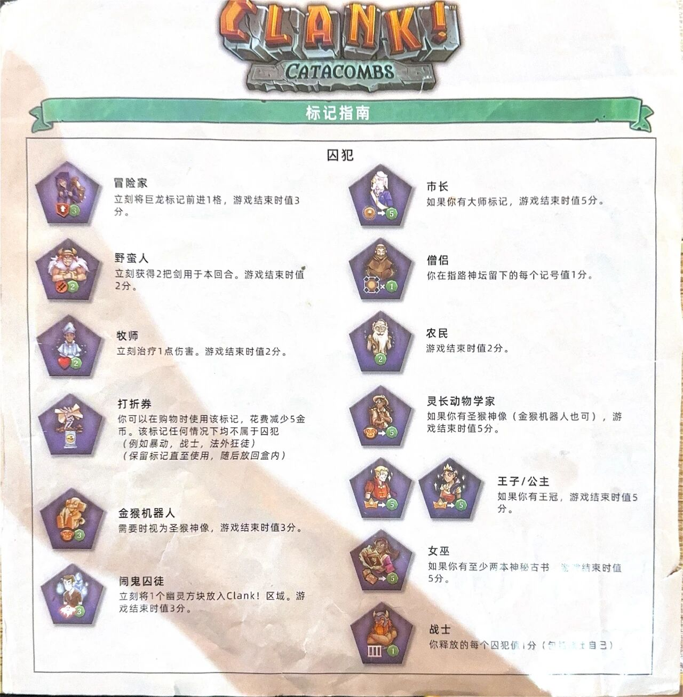
〔图 页首为 CLANK! CATACOMBS 游戏标志〕
标记指南
囚犯
〔图 左栏各条目配紫色五边形标记图；数字为标记上的绿色圆牌分数〕
冒险家
立刻将巨龙标记前进1格，游戏结束时值3分。
野蛮人
立刻获得2把剑用于本回合。游戏结束时值2分。
牧师
立刻治疗1点伤害。游戏结束时值2分。
打折券
你可以在购物时使用该标记，花费减少5金币。该标记任何情况下均不属于囚犯
（例如暴动，战士，法外狂徒）
（保留标记直至使用，随后放回盒内）
金猴机器人
需要时视为圣猴神像，游戏结束时值3分。
闹鬼囚徒
立刻将1个幽灵方块放入Clank! 区域。游戏结束时值3分。
〔图 右栏各条目配紫色五边形标记图；市长/王子/公主等标记图为两枚并排〕
市长
如果你有大师标记，游戏结束时值5分。
僧侣
你在指路神坛留下的每个记号值1分。
农民
游戏结束时值2分。
灵长动物学家
如果你有圣猴神像（金猴机器人也可），游戏结束时值5分。
王子/公主
如果你有王冠，游戏结束时值5分。
女巫
如果你有至少两本神秘古书 〔约2字被污迹遮盖，隐约笔画依上下文疑为"游戏"〕结束时值5分。
战士
你释放的每个囚犯值1分（包括〔约1-2字被污迹遮盖，隐约笔画疑为"战"〕士自己）
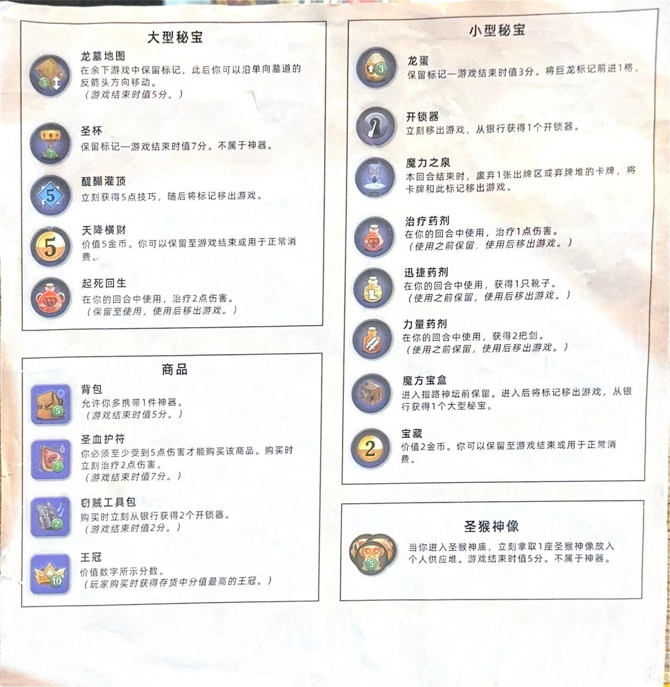
大型秘宝
龙墓地地图
〔图 圆形代币，画有卷起的地图，带数字5与上下箭头〕
在余下游戏中保留标记，此后你可以沿单向墓道的反箭头方向移动。
（游戏结束时值5分。）
圣杯
〔图 圆形代币，画有金色圣杯，带数字7〕
保留标记—游戏结束时值7分。不属于神器。〔原文如此："标记"与"游戏"之间印为一字线〕
醍醐灌顶
〔图 蓝色菱形代币，带数字5〕
立刻获得5点技巧，随后将标记移出游戏。
天降横财
〔图 金色圆形金币代币，带数字5〕
价值5金币。你可以保留至游戏结束或用于正常消费。
起死回生
〔图 圆形代币，画有红心药瓶〕
在你的回合中使用，治疗2点伤害。
（保留至使用，使用后移出游戏。）
商品
背包
〔图 紫色方形商品块，画有皮背包，带数字5〕
允许你多携带1件神器。
（游戏结束时值5分。）
圣血护符
〔图 紫色方形商品块，画有血滴形护符，带数字7〕
你必须至少受到5点伤害才能购买该商品。购买时立刻治疗2点伤害。
（游戏结束时值7分。）
窃贼工具包
〔图 紫色方形商品块，画有撬棍工具，带数字2〕
购买时立刻从银行获得2个开锁器。
（游戏结束时值2分。）
王冠
〔图 紫色方形商品块，画有金色王冠，带数字10〕
价值数字所示分数。
（玩家购买时获得存货中分值最高的王冠。）
小型秘宝
龙蛋
〔图 圆形代币，画有龙蛋，带上升箭头与数字3〕
保留标记—游戏结束时值3分。将巨龙标记前进1格。〔原文如此："标记"与"游戏"之间印为一字线〕
开锁器
〔图 圆形代币，画有钥匙孔〕
立刻移出游戏，从银行获得1个开锁器。
魔力之泉
〔图 圆形代币，画有喷泉与向下箭头〕
本回合结束时，废弃1张出牌区或弃牌堆的卡牌，将卡牌和此标记移出游戏。
治疗药剂
〔图 圆形代币，画有红心药瓶〕
在你的回合中使用，治疗1点伤害。
（使用之前保留，使用后移出游戏。）
迅捷药剂
〔图 圆形代币，画有靴子药瓶〕
在你的回合中使用，获得1只靴子。
（使用之前保留，使用后移出游戏。）
力量药剂
〔图 圆形代币，画有双剑药瓶〕
在你的回合中使用，获得2把剑。
（使用之前保留，使用后移出游戏。）
魔方宝盒
〔图 圆形代币，画有方形宝盒〕
进入指路神坛前保留。进入后将标记移出游戏，从银行获得1个大型秘宝。
宝藏
〔图 金色圆形金币代币，带数字2〕
价值2金币。你可以保留至游戏结束或用于正常消费。
圣猴神像
〔图 两枚重叠的圆形代币，画有猴脸，带数字5〕
当你进入圣猴神庙，立刻拿取1座圣猴神像放入个人供应堆。游戏结束时值5分。不属于神器。